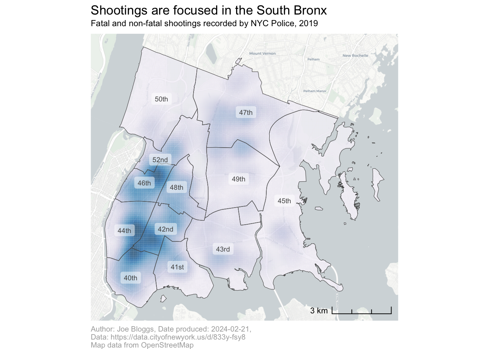
6 Giving a map context
Add titles, sources, legends, scale bars and other contextual information to your maps.
To load the interactive tutorial for this chapter, copy and paste the following code into the RStudio console:
and press Enter.
6.1 Introduction
In this tutorial we will create this map of shootings in the Bronx borough of New York City in 2019. You’ll see that unlike the maps we have made so far, this map includes contextual elements such as a title, a legend and a scale bar.
In this tutorial we will learn to add important context to our maps using these elements.
6.2 Map choices
Among the most important decisions you make when you are creating a map is what information to include and what to leave out. Watch this video to learn more about why this is important and how you can make those decisions.
The most important thing to remember when designing a map is to keep in mind the purpose that the map will be used for. Research on how people use maps has repeatedly shown that “the nature of the task or function to be performed by the map user is the single most important factor in determining how [someone] processes the information on the map”.
As explained in the video, when you create a crime map you should ask yourself:
- What will readers be using this map for? .
- What information do readers need?
- What do readers already know?
- In what context are people going to use this map?
- How could this map lead the audience to a wrong conclusion?
Maps are powerful communication tools, which can sometimes knowingly or unknowingly mislead the reader. Watch this video to learn more about how maps can be misleading.
Whenever you make a map, think about your own biases – are your own views on a topic likely to influence the results of your analysis? One way to test your own assumptions about a topic is to test them against other potential assumptions using an approach to crime analysis called hypothesis testing. To find out more about the hypothesis testing approach, read the paper Improving the explanatory content of analysis products using hypothesis testing.
6.3 Visual hierarchy
Maps are among the most complex types of data visualisation. Even if we have chosen wisely what to include and what to leave out, there is likely to be lots of information on our map. For all but the simplest maps, there is a risk of readers – especially those in a hurry – might be overwhelmed or mislead by competing pieces of information (such as different layers of data) on a map.
To help readers understand what parts of a map they should focus most of their attention on and which are of less importance, we can establish a visual hierarchy. Watch this video to learn more about visual hierarchies in mapping.
We have used some of the principles of visual hierarchy in the maps we have already made. For example, in the density map of bike thefts in Vancouver, we used strong colours to represent the data and shades of grey for the base map. This helped readers intuitively understand that they should focus most attention on the data.
quiz(
caption = "",
question(
"Which one of these is not a visual element that we can use to establish the visual hierarchy of different elements on our map?",
answer("Brand", correct = TRUE),
answer("Colour"),
answer("Size"),
answer("Isolation"),
correct = random_praise(),
allow_retry = TRUE,
random_answer_order = TRUE
),
question(
"Which types of colour are more likely to move an element up the visual hierarchy?",
answer("Colours that are more saturated", correct = TRUE),
answer("Colours that are less saturated"),
correct = random_praise(),
allow_retry = TRUE,
random_answer_order = TRUE
)
)6.4 Supporting elements
We can often make our maps much more useful by adding supporting elements that explain the map content, give context or provide extra information. Watch this video to find out what elements you can add to your maps to make them more useful.
We will not need to include every supporting element mentioned in the video in all the maps we make. The visual hierarchy that you establish in your map by use of size, colour, etc. should make it clear which elements are most important. The data should always come first in the visual hierarchy, usually followed by the title and then the legend. Other elements should be lower down the hierarchy. In every map, the supporting elements should be designed so that they do not distract from the data.
| place in hierarchy | map element | how often needed |
|---|---|---|
| 1st | data layers | always |
| 2nd | title | virtually always |
| 3rd | legend | usually |
| 4th | base map | almost always |
| 5th | author and date | virtually always |
| =6th | scale | sometimes |
| =6th | north arrow | sometimes |
| 7th | grid | rarely |
Elements that are almost always needed on a crime map are not necessarily highest on the visual hierarchy. For example, the author name is virtually always needed but is relatively low on the visual hierarchy. This is because it is important information for readers who need it to judge the reliability of a map, or to get in touch to ask questions, but should not distract from the data for those readers who do not need it.
quiz(
caption = "",
question(
"Which of these elements should be lowest down the visual hierarchy on most maps?",
answer("North arrow", correct = TRUE),
answer("Author and date"),
answer("Title"),
answer("Data layers"),
correct = random_praise(),
allow_retry = TRUE,
random_answer_order = TRUE
),
question(
"How likely is it that our maps will need to include a base map?",
answer("Almost always", correct = TRUE),
answer("Usually"),
answer("Occasionally"),
answer("Never"),
correct = random_praise(),
allow_retry = TRUE,
random_answer_order = TRUE
)
)Before we start learning the code needed to add titles and legends to our maps, watch this video walk-though of the main steps.
6.5 Creating and storing a map
Since we will be adding various elements to a map in this tutorial, we will first create a map and save it as an R object. Any map or chart produced using the ggplot() function can be saved as an object using the assignment operator <-. Just as for the result of any other R function, if we save it to an object the result will not be printed to the screen, but we can easily see the plot by simply typing the object name in the R console.
# Load packages
library(ggspatial)
library(sf)
library(sfhotspot)
library(tidyverse)
# Load shootings data
shootings <- read_csv(
"https://mpjashby.github.io/crimemappingdata/bronx_shootings.csv",
show_col_types = FALSE
) |>
st_as_sf(coords = c("longitude", "latitude"), crs = "EPSG:4326") |>
st_transform("EPSG:6538")
# Load NYC police precincts data
precincts <- read_sf("https://mpjashby.github.io/crimemappingdata/nyc_precincts.gpkg") |>
janitor::clean_names() |>
# Filter just those precincts that are in the Bronx (40th to 52nd)
filter(precinct %in% 40:52) |>
st_transform("EPSG:6538")
# Calculate KDE
shootings_kde <- shootings |>
hotspot_kde(
grid = hotspot_grid(precincts, cell_size = 100),
bandwidth_adjust = 0.33,
quiet = TRUE
) |>
st_intersection(precincts)Warning: attribute variables are assumed to be spatially constant throughout
all geometries# Create map object
shootings_map <- ggplot() +
annotation_map_tile(type = "cartolight", zoomin = 0, progress = "none") +
geom_sf(aes(fill = kde), data = shootings_kde, alpha = 0.75, colour = NA) +
geom_sf(data = precincts, colour = "grey33", fill = NA) +
geom_sf_label(
aes(label = scales::ordinal(precinct)),
data = precincts,
alpha = 0.5,
colour = "grey33",
size = 2.5,
label.size = NA
) +
scale_fill_distiller(palette = "PuBu", direction = 1) +
theme_void() +
theme(legend.position = "none")
# Display map
shootings_map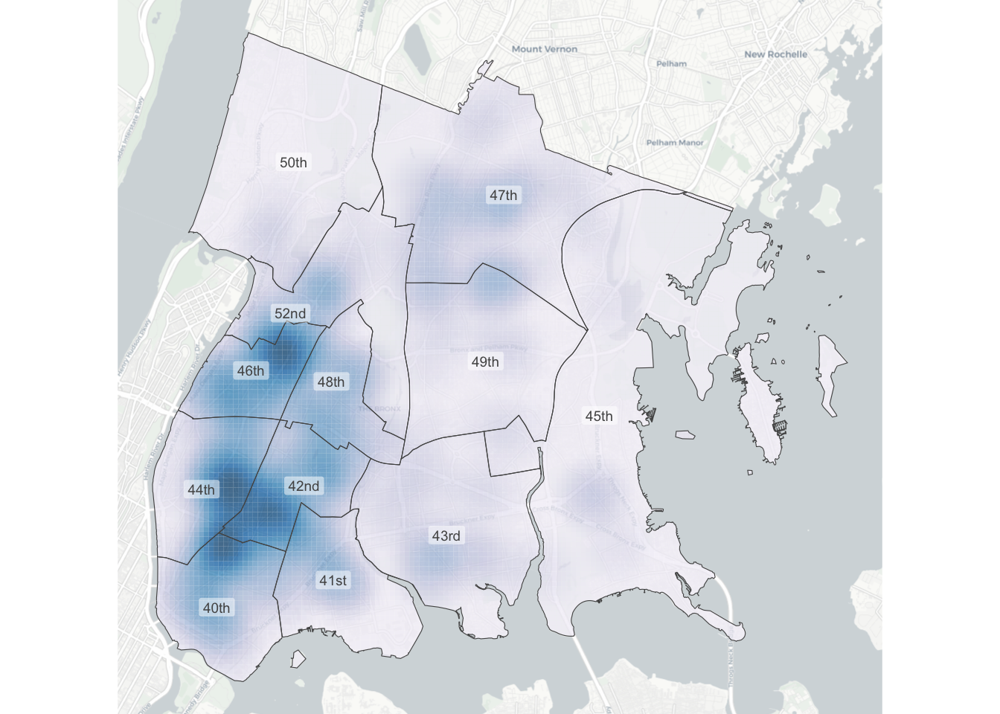
The code used to create this map is very similar to the code we used in one of the previous tutorials to make a map of bike theft in Vancouver, although there are a few differences.
Looking at the code above, we have used the grid argument to the hotspot_kde() function, specifying hotspot_grid(precincts, cell_size = 100). By default, hotspot_kde() calculates density estimates (KDE values) for every grid cell within the area covered by the crime data. This is fine when at least a few crimes have occurred in all the parts of the area for which we have data. But if crime is heavily concentrated in a few places and there are large areas with no crimes, the density layer will not cover the whole area for which we have data. In this case, it is important to extend the density layer manually to make it clear that the apparent low density of crime in some places is due to a genuine lack of crime there, rather than because we do not have data for those places.
We can do this by creating a grid of cells for which KDE values should be calculated, rather than letting hotspot_kde() do this automatically. In the code above, we have used the hotspot_grid() function to create a grid that covers all the precincts in the Bronx (the area we have data for), and then passed the resulting grid to the grid argument of hotspot_kde(). This ensures that KDE values are calculated for every part of the Bronx.

The only other difference from the Vancouver map is that we have used the ordinal() function from the scales package to convert the precinct numbers to ordinal numbers (1st, 2nd, 3rd, etc.) for the map labels. This is because police precincts in New York City are usually referred to using ordinal numbers (e.g. “the 1st Precinct” rather than “Precinct 1”) and it will be easier for people to read the map if it uses terms they are familiar with.
There are many other functions in the scales package that format numbers in different ways, including comma() to add thousands separators to numbers and dollar() to format numbers as values in dollars or other currencies. There is a full list of scales functions on the package website.
We now have a basic map of shootings in the Bronx. This map isn’t good enough on its own, but we can use it to learn how to add supporting elements to a map.
6.6 Titles
A map title is one of the most important ways to add context to a map. Titles can either be descriptive or declarative. Descriptive titles simply state what data are shown on the map. For example, we might give our map the title “Shootings in the Bronx, 2019”. Declarative titles, on the other hand, state what you think the main conclusion should be that readers remember about the map. For example, we might use the title “Shootings are focused in the South Bronx”.
Declarative titles are usually more useful than descriptive titles because they help the reader to interpret the map. But writing a good declarative title is harder than writing a descriptive title, because it requires you to think about what is the main point that you want to make with the map. To help you come up with a good declarative title, you might want to try several different titles so that you can choose the one that communicates your message most clearly.
We can add a title to our map using the labs() (short for ‘labels’) function from the ggplot2 package. We can use labs() to add labels to various different parts of a map or plot, but for now we will just use the argument title to set the title.
Sometimes our preferred title might be too long to fit on a map. In this case, we can break the title across two or more lines. We can do this manually by adding the characters \n (the character code for a new line) at the point where we want the text to start a new line. Alternatively, we can use the str_wrap() function from the stringr package to wrap the text automatically into lines of a given maximum length (specified using the wrap argument).
When you use a declarative title for your map, it is often useful to provide a subtitle containing descriptive information. Adding a subtitle is very easy using the subtitle argument to the labs() function. Use the code above as a template to add a subtitle to your map explaining that the map shows fatal and non-fatal shootings in 2019.
# Add a `subtitle` argument to the labs() function
shootings_map +
labs(title = "Shootings are focused in the South Bronx")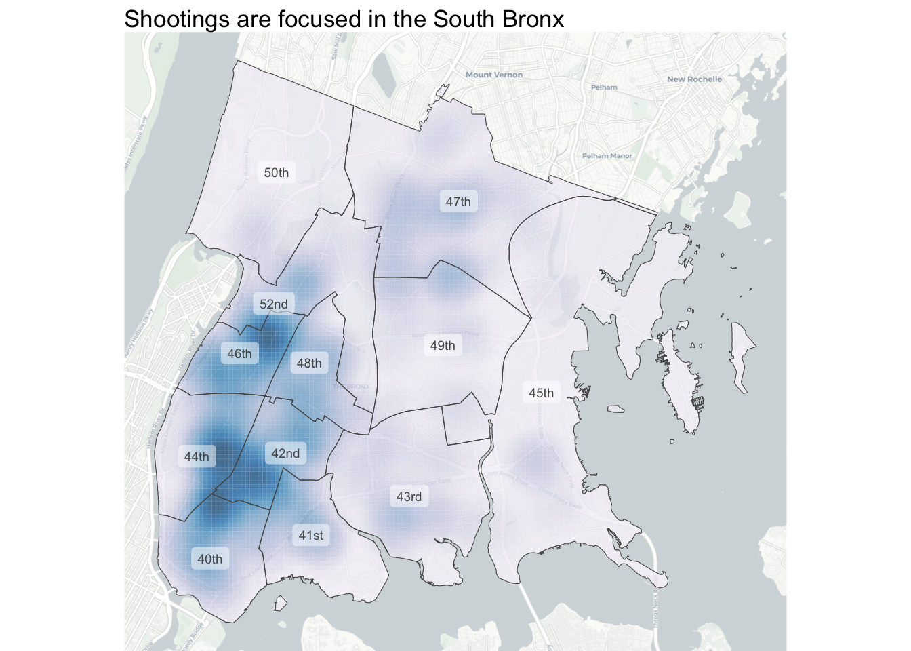
shootings_map +
labs(
title = "Shootings are focused in the South Bronx",
subtitle = "Fatal and non-fatal shootings recorded by NYC Police, 2019"
)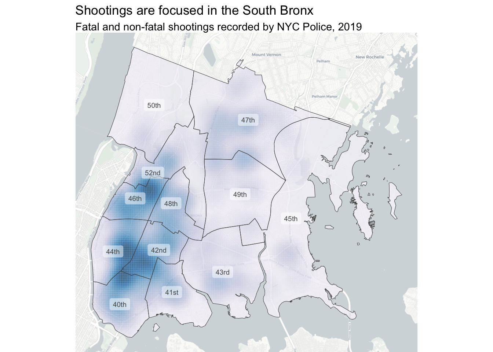
6.6.2 Changing the appearance of titles and captions
We have added a title, subtitle and caption to our map, but you might not be happy with their appearance. You might want, for example, to move the caption down the visual hierarchy by making the text smaller and/or a lighter colour, or add some space between the subtitle and the map itself.
We can exercise almost complete control over the supporting elements of maps or charts made with ggplot() using the theme() function. One important thing to remember about theme() is that it only controls the non-data elements of a map – nothing you do with the theme() function will have any effect on the data elements of a map (in this case, the layer showing the density of shootings). To change the appearance of data layers within ggplot() maps, use the geom_, and scale_ families of functions as we have learned in previous tutorials.
The theme() function has a lot of potential arguments. If you need help using the theme() function (or any function in R) you can view a manual page (including a list of arguments) for the function by:
- typing a question mark followed by the function name without parentheses (e.g.
?theme) into the R console, - typing the function name without parentheses into the search box in the Help panel in RStudio, or
- clicking on the function name anywhere in your R code to place the cursor on the function name, then pressing
F1on your keyboard.
Try opening the manual page for theme() now to see the list of possible arguments it can take. Fortunately, we will not need most of these arguments most of the time – ggplot() has default values built in for every value that can be changed using theme(), and these defaults will be reasonable in almost all cases.
To reduce the visual prominence of the map caption, we can change the value of the plot.caption argument to theme(). Since the caption is a text element (rather than a polygon, line, etc.), we can use the helper function element_text() to do this. The following code changes the colour of the caption text to a lighter grey and makes the text smaller relative to the default using the helper function rel() (for relative sizing) – 0.7 means the text will be 70% as big as it would have been by default.
shootings_map +
labs(
title = "Shootings are focused in the South Bronx",
subtitle = "Fatal and non-fatal shootings recorded by NYC Police, 2019",
caption = str_glue(
"Author: Joe Bloggs, Date produced: {lubridate::today()},\n",
"Data: https://data.cityofnewyork.us/d/833y-fsy8\n",
"Map data from OpenStreetMap"
)
) +
theme(
plot.caption = element_text(colour = "grey67", size = rel(0.7))
)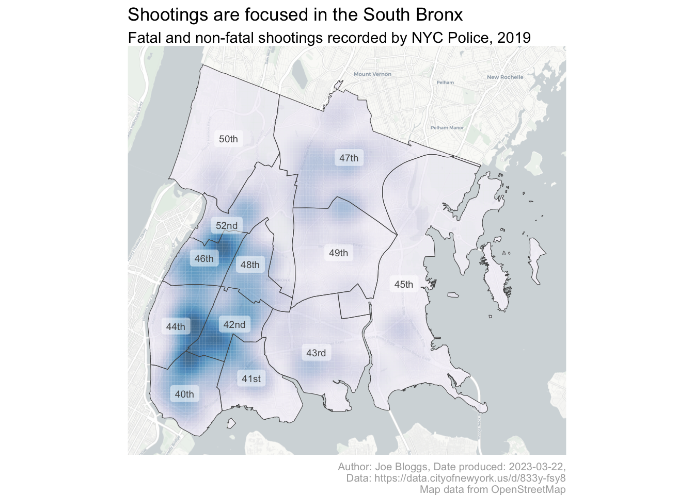
The helper function element_text() has arguments to control the appearance of text in different ways. As well as colour (or color, either is fine) and size, there are:
-
familycontrols the font used, e.g. Times New Roman or Helvetica, -
facecontrols the style of the font, i.e. ‘plain’, ‘italic’, ‘bold’ or ‘bold.italic’, -
hjustcontrols the horizontal justification of the text, where 0 means left aligned, 0.5 means centred and 1 means right aligned, -
vjustcontrols the vertical justification, and -
anglecontrols the angle (in degrees) of the text (0 means horizontal), -
lineheightcontrols the space between lines if you have created a value that has more than one line (e.g. using\norstr_wrap()).
The margin argument controls the space around the text. It is easiest to specify the value of margin using the helper function margin() designed for that purpose. You specify the top, right, bottom and left margin separately in that order – to remember the order, think ‘trouble’.
The following code changes the margin around the map subtitle. Change this code so that it also makes the subtitle 80% of the default size and changes the caption so that it is left aligned.
shootings_map +
labs(
title = "Shootings are focused in the South Bronx",
subtitle = "Fatal and non-fatal shootings recorded by NYC Police, 2019",
caption = str_glue(
"Author: Joe Bloggs, Date produced: {lubridate::today()},\n",
"Data: https://data.cityofnewyork.us/d/833y-fsy8\n",
"Map data from OpenStreetMap"
)
) +
theme(
plot.subtitle = element_text(margin = margin(3, 0, 6, 0, unit = "pt")),
plot.caption = element_text(colour = "grey50", size = rel(0.7))
)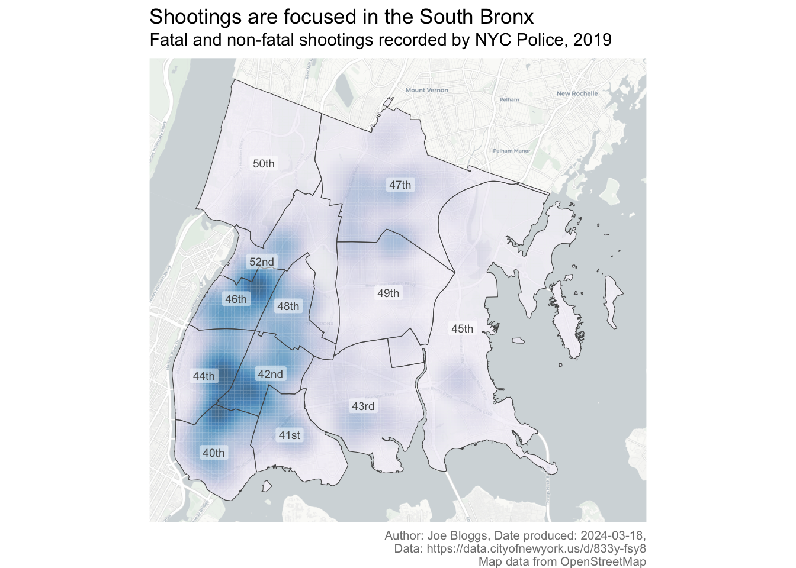
shootings_map +
labs(
title = "Shootings are focused in the South Bronx",
subtitle = "Fatal and non-fatal shootings recorded by NYC Police, 2019",
caption = str_glue(
"Author: Joe Bloggs, Date produced: {lubridate::today()},\n",
"Data: https://data.cityofnewyork.us/d/833y-fsy8\n",
"Map data from OpenStreetMap"
)
) +
theme(
# Make the plot subtitle smaller and adjust the margin around it
plot.subtitle = element_text(size = rel(0.8), margin = margin(3, 0, 6, 0)),
# Make the legend caption smaller, left-aligned and a lighter shade of grey
plot.caption = element_text(colour = "grey67", size = rel(0.7), hjust = 0)
)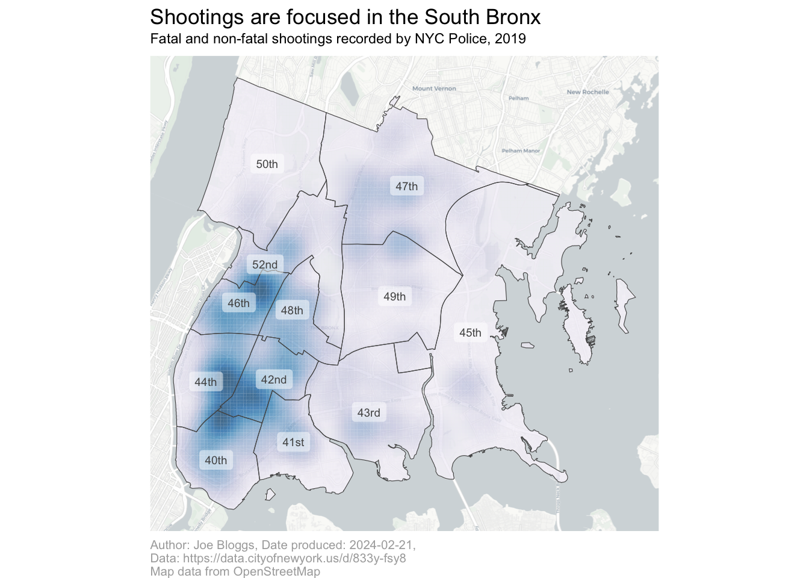
Now that we have finished setting the text elements for our map, we can save it as a new object that we can use as the basis for the other objects we want to add.
shootings_map_titled <- shootings_map +
labs(
title = "Shootings are focused in the South Bronx",
subtitle = "Fatal and non-fatal shootings recorded by NYC Police, 2019",
caption = str_glue(
"Author: Joe Bloggs, Date produced: {lubridate::today()},\n",
"Data: https://data.cityofnewyork.us/d/833y-fsy8\n",
"Map data from OpenStreetMap"
)
) +
theme(
# Make the plot subtitle smaller and adjust the margin around it
plot.subtitle = element_text(size = rel(0.8), margin = margin(3, 0, 6, 0)),
# Make the legend caption smaller, left-aligned and a lighter shade of grey
plot.caption = element_text(colour = "grey67", size = rel(0.7), hjust = 0)
)In this tutorial we will store the map we are creating in an object several times as we go through the process of explaining how to add context to a map. When you write your own code, you should not do this. Instead, you should create the map from start to finish in a single block of code. Doing that will make sure your code is easy to read and that you don’t have to keep track of more objects than necessary. For an example of this, see the final page of this tutorial.
6.7 Legends
Legends are important for all but the simplest crime maps because they help readers to interpret the points, lines and polygons used to represent data on a particular map. Except for point maps containing only a small number of crimes (such as the map of homicide in downtown Atlanta that we produced in the first tutorial), crime maps will almost always need a legend to help users interpret them.
Producing a legend manually could be quite complicated, but fortunately ggplot() produces legends automatically. The reason the maps we have produced up to now haven’t included legends is that we have been suppressing the legends using the argument legend.position = "none" to the theme() function – look back at the code on the page ‘Creating and storing a map’ in this tutorial to see this code on the final line of the stack of functions added to ggplot().
ggplot() will add a legend to a map or chart whenever one or more layers of data are represented using an aesthetic property such as size, shape, colour or fill. In our current map, the density of shootings is represented using the fill colour of the polygons produced by the hotspot_kde() function, with darker colours representing more shootings.
To reveal the legend automatically generated, we can add another call to the theme() function to our existing ggplot() object. This overrides the previous code that set the legend position to none, instead placing the legend on the right-hand side of the plot. We only need to do this because we previously suppressed the legend – if we had not suppressed it, the legend would have appeared automatically.
shootings_map_titled +
theme(
# Position the legend on the right-hand side of the plot
legend.position = "right"
)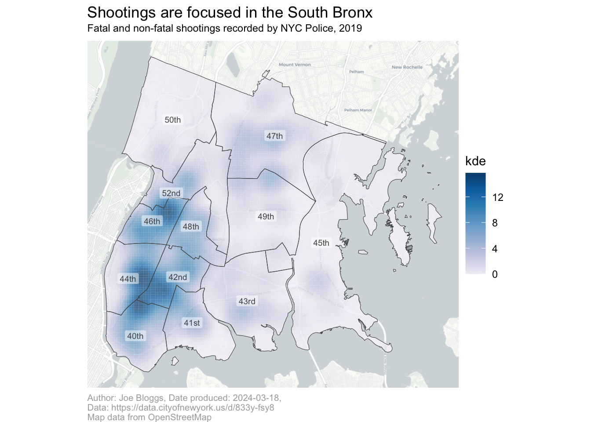
Our map now has a legend, but we may want to adjust its appearance by:
- changing the default legend title from “kde” to something more meaningful,
- moving the legend down the visual hierarchy by making it smaller (at the moment it is almost as visually prominent as the data),
- removing the potentially confusing raw density values.
We can change the default legend title by once again using the labs() function. Since we want to change the title of the legend, you might reasonably think that we would do this using something like labs(legend = "density") but unfortunately that code would do nothing at all. Instead, we have to set the legend title using the aesthetic (colour, size, shape, etc.) that the legend represents. This makes it possible to specify multiple titles if there are separate legends for different layers that use different aesthetics. For example if a map used lines of different colours to show streets of different types and filled polygons to show the density of crime, it would be possible to have separate legends explaining each aesthetic. In this case, we’ve specified that the kde column in the data should control the fill aesthetic, so we can set the title for that legend using fill = "title we want".
shootings_map_titled +
labs(fill = "kernel density\nof shootings") +
theme(
# Position the legend on the right-hand side of the plot
legend.position = "right"
)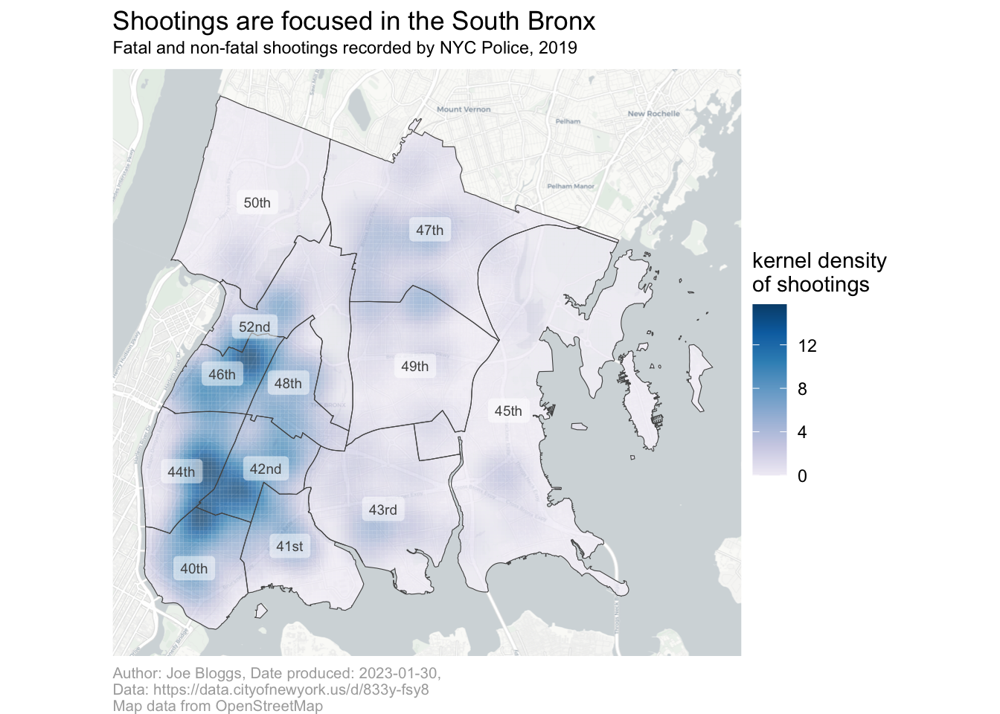
To make the legend smaller, we can use theme() in the same way as we did to change the appearance of the caption. We use the legend.title argument to format the legend title and the legend.text argument to format the labels for each value in the legend.
We will also make the colour bar in the legend (called the key by ggplot()) slightly smaller using the legend.key.width argument. To do this we will use the helper function unit(), which allows us to specify the size using any of several common units. In this case, we will specify the key size in lines (1 line = the height of one line of text) so that it is relative to the text size we have chosen.
At the same time, we will reduce the size of the legend title and the legend text (the numbers next to the colour bar), using the legend.text and legend.title arguments together with the the helper function element_text(). In both cases, we will set the text size relative to the default text size using the rel() helper function.
shootings_map_titled +
labs(fill = "kernel density\nof shootings") +
theme(
# Make the legend colour bar smaller
legend.key.width = unit(0.8, "lines"),
# Position the legend on the right-hand side of the plot
legend.position = "right",
# Make the legend text smaller
legend.text = element_text(size = rel(0.7)),
legend.title = element_text(size = rel(0.8))
)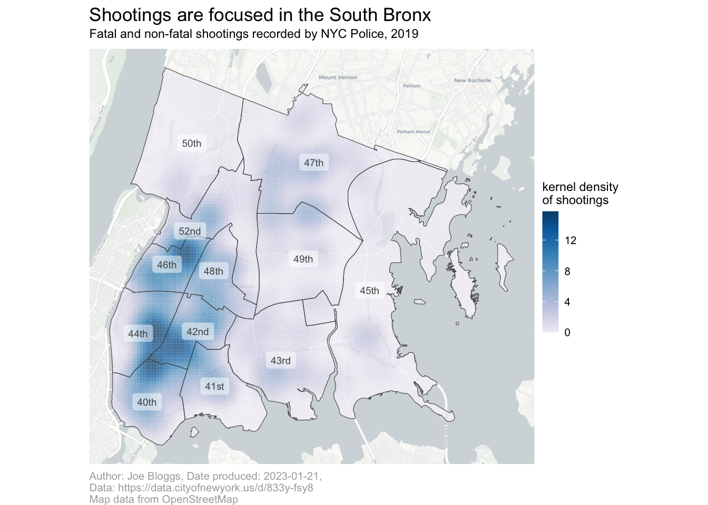
Finally, we want to remove the raw density values, since these are difficult to interpret and might distract readers from the key message that darker colours on the map represent higher densities of shootings.
By default, ggplot() sets the label for each legend key based on the data. To specify our own labels, we can use the labels argument to the scale_fill_distiller() function that we previously used to set the colour scheme of the density layer on the map.
When we set colour bar labels manually, we have to also specify where on the colour bar we want those labels to appear. We do this using the breaks argument to scale_fill_distiller(), making sure the number of values we supply to the breaks argument is the same as the number of labels we’ve given to the labels argument (otherwise R will produce an error).
In this case, we want to add two labels (“higher” and “lower”), one at either end of the colour bar. We could look at kde column of the shootings_kde object to find the minimum and maximum values, but that would introduce the risk of us accidentally entering the wrong values. Instead, we can use the pull() function to extract the kde column from the shootings_kde dataset and then use the range() function to find the minimum and maximum values. Putting this together, we get breaks = range(pull(shootings_kde, "kde")).
shootings_map_titled +
scale_fill_distiller(
palette = "PuBu",
direction = 1,
# Specify label positions as the minimum and maximum KDE values
breaks = range(pull(shootings_kde, "kde")),
labels = c("lower", "higher")
) +
labs(fill = "kernel density\nof shootings") +
theme(
# Make the legend colour bar smaller
legend.key.width = unit(0.8, "lines"),
# Position the legend on the right-hand side of the plot
legend.position = "right",
# Make the legend text smaller
legend.text = element_text(size = rel(0.7)),
legend.title = element_text(size = rel(0.8))
)Scale for fill is already present.
Adding another scale for fill, which will replace the existing scale.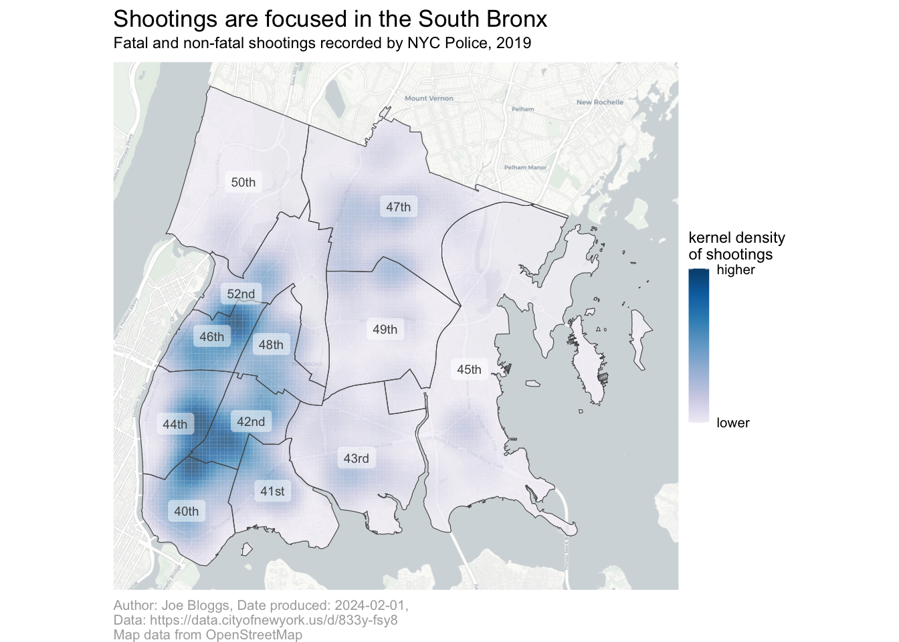
Now that we have finished formatting the legend, we can again store the map as an object that we can build on further.
shootings_map_legend <- shootings_map_titled +
scale_fill_distiller(
palette = "PuBu",
direction = 1,
# Specify label positions as the minimum and maximum KDE values
breaks = range(pull(shootings_kde, "kde")),
labels = c("lower", "higher")
) +
labs(fill = "kernel density\nof shootings") +
theme(
# Make the legend colour bar smaller
legend.key.width = unit(0.8, "lines"),
# Position the legend on the right-hand side of the plot
legend.position = "right",
# Make the legend text smaller
legend.text = element_text(size = rel(0.7)),
legend.title = element_text(size = rel(0.8))
)Scale for fill is already present.
Adding another scale for fill, which will replace the existing scale.6.8 Scales and north arrows
The final elements we can add to our map are a scale bar and a north arrow, which can both be added using functions from the ggspatial package.
6.8.1 Scale bars
To add a scale bar, we can add a call to the annotation_scale() function to our existing ggplot() object.
The default scale bar is a little too visually dominant for the low place it should have in the visual hierarchy of our map, and the default placement in the bottom-left corner happens to overlap with the highest density of shootings. We can change the scale bar using arguments to the annotation_scale() function:
-
width_hint = 1/5changes the (approximate) proportion of the map width across which the scale bar stretches, -
style = "ticks"changes the style of the scale bar to the less visually prominent line-and-tick-marks style, and -
location = "br"moves the scale bar to the bottom-right corner of the map.
6.8.2 North arrows
We can add a north arrow using the annotation_north_arrow() function. The default arrow is too obtrusive to fit its position in the visual hierarchy, so we will change its appearance using the arguments:
-
location = "tr"to move the north arrow to the top-right corner, since we have put the scale bar in the bottom-right where the north arrow would be placed by default, -
height = unit(1.5, "lines")to make the arrow smaller, and -
style = north_arrow_minimal(text_size = 8)to use a smaller style of arrow, at the same time reducing the font size (measured in points) of the N symbol.
6.9 Saving maps
Once you have a complete map, it is often useful to save it as an image file so that you can share it with others or embed it into a report or presentation. You can save plots created with ggplot() using the ggsave() function.
Before we do that, lets create a final map that includes a base map as well as some supporting elements. We won’t include a north arrow because north is at the top of the map and it’s unlikely anyone will be using this map for navigation. We will include a scale bar so that people looking at the map can see the approximate size of shooting hotspots. Remember we have already loaded the necessary packages, as well as data stored in the shootings, precincts and shootings_kde objects.
There is usually no need to save the map into several different objects (e.g. shootings_map_titled or shootings_map_legend) as we have done in this tutorial. We have only done that here so you could learn about the different contextual elements one by one.
It is usually much better to create a whole ggplot() stack in one go, since it is easier to keep track of all the elements that way. In the code below all the elements have been combined into a single ggplot() stack.
shootings_map_final <- ggplot() +
annotation_map_tile(type = "cartolight", zoomin = 0, progress = "none") +
geom_sf(aes(fill = kde), data = shootings_kde, alpha = 0.75, colour = NA) +
geom_sf(data = precincts, colour = "grey33", fill = NA) +
geom_sf_label(
aes(label = scales::ordinal(precinct)),
data = precincts,
alpha = 0.5,
colour = "grey33",
size = 2.5,
label.size = NA
) +
annotation_scale(width_hint = 1/5, style = "ticks", location = "br") +
scale_fill_distiller(
palette = "PuBu",
breaks = range(pull(shootings_kde, "kde")),
labels = c("lower", "higher"),
direction = 1
) +
labs(
title = "Shootings are focused in the South Bronx",
subtitle = "Fatal and non-fatal shootings recorded by NYC Police, 2019",
caption = str_glue(
"Author: Joe Bloggs, Date produced: {lubridate::today()},\n",
"Data: https://data.cityofnewyork.us/d/833y-fsy8\n",
"Map data from OpenStreetMap"
),
fill = "kernel density\nof shootings"
) +
theme_void() +
theme(
legend.key.width = unit(0.8, "lines"),
legend.text = element_text(size = rel(0.7)),
legend.title = element_text(size = rel(0.8)),
plot.subtitle = element_text(size = rel(0.8), margin = margin(3, 0, 6, 0)),
plot.caption = element_text(colour = "grey67", size = rel(0.7), hjust = 0)
)
# Display map
shootings_map_final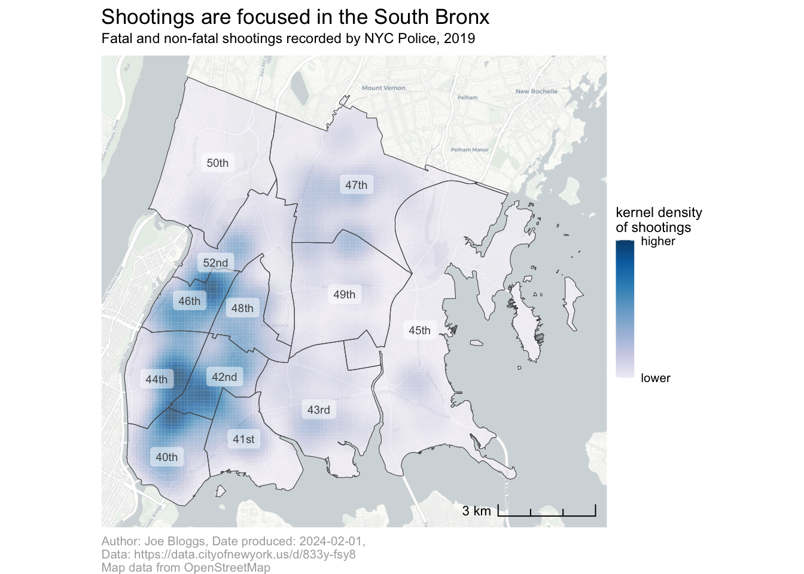
ggsave() can create image files in many different formats, including PNG, JPEG and PDF. ggsave() will determine which type of file to create according to the file extension of the file name that you specify. So ggsave("bronx_shootings_2019.pdf", plot = shootings_map_legend) produces a PDF file, while ggsave("bronx_shootings_2019.jpg", plot = shootings_map_legend) produces a JPEG image file.
You can specify the size of the image that will be saved using the height and width arguments. Note that for historical reasons these values are in inches by default, but you can change this to either centimetres (using units = "cm"), millimetres (using units = "mm") or pixels (using units = "px").
To share our map with others, lets save it as an A4-size PDF.
We can now use share this file by email, upload it to a website or embed it in another document.
6.10 In summary
In this tutorial we have learned about the importance of understanding the purpose for which people will use a map when making decisions about map design. We have also learned about how establishing a visual hierarchy on our map can help steer readers towards the most-important elements and how to add titles, legends and scale bars to maps in R.
You can find out more about the topics we have covered in this tutorial:
- For a short summary of research into how people read maps and what that tells us about how to design a map, see Cartography, visual perception and cognitive psychology by Amy Griffin.
- For a more-detailed explanation of how visual hierarchy can be applied to maps, see Visual Hierarchy and Layout.
- For more examples of how maps can mislead, read How to lie with maps by Alan Smith.

XKCD.com comic ‘Geography’ licensed under the Creative Commons Attribution-NonCommercial license.